伝えたいこと
好きなことを仕事にするって、めっちゃいい。
「つらい時間の対価」だけが仕事ではない。
対象は「楽しいことを仕事にして、お金をもらってよいのか」と感じている人。筆者が実際に経験した、楽しさ・貢献・評価の両立を届ける。「天職の見つけ方」や経歴紹介を主題にせず、仕事に対する可能性を明るく示す。
異なる価値観と仕事の大変さは13で一度きちんと扱い、14では本人の肯定で締める。誰でもすぐに成功できるという保証、収入額の追加、国民性の断定はしない。
構成と尺
| カット | 役割 | 見せ場 |
|---|---|---|
| 01–02 | 思い込みを問い、答えを先に出す | 窮屈な縦組み → 明るい巨大な二段組み |
| 03–04 | 仕事は苦しい、休日は夢中だった | 評価と内面の対比 → 手元動画 |
| 05–08 | 香港で「好き」が仕事になり、評価された | 写真の文字抜き → 同じ手元が平日へ → 引用 → 肯定 |
| 09–11 | 楽しめる仕事を選び、好きの範囲が広がる | 行の向きが変わる → 面が広がる → 書体の対比 |
| 12–14 | 本人の実感、留保、最後の肯定 | 語の循環 → 一呼吸 → 最大の文字の見せ場 |
| 15 | 制作表示 | 指定ロゴの4秒アニメーション＋1.5秒保持 |
合計約138.5秒。各カットの尺は参考値。ナレーションの実音声を聞いて間を確保し、必要なら全体を伸縮する。数字上の文字数だけで読了・発話を合格にしない。
文字そのものが、映像の主役
ベースはインク色・紙色・アンバー。青は引用や展開のアクセントに使う。紙面のような明朝、太いDela、読みやすいNoto、開発場面のドット書体を役割で使い分ける。全編を同じ暗い背景・同じ札・同じ横パンにそろえない。
- 字組み：01の縦組み、02の巨大な二段、04の縦横混在、05の写真抜き、07の数字と引用、10の扇状の面、12の三角配置、14の斜めの巨大活字。句読点・詰め組み（palt）・サイズ差まで設計する。
- 読む間：行・語の塊・色面を大きく移動させ、前後の位置関係や構図を変える。細かい揺れ・拍ごとの字形の脈動・一字ずつの散乱で動き量を稼がない。
- エフェクト：行マスク、写真の文字抜き、色面の開閉、語の寄り、短い切り替え時の残像、図の層の回り込みを場面の意味に合わせて重ねる。重要文が読める瞬間まで長いブラーを残さない。
- 実装：文字はDOM/CSSまたは同等の制御可能な層。three.jsは面の奥行き・回り込みに推奨し、文字とはカメラを分ける。不使用なら理由を制作報告へ。Remotion利用時はすべてフレーム時刻から再現する。
白い人物ピクトは本編の必須素材にしない。写真・動画の窓と文字で体験を具体化する。角度・位置・補間・効果の実装方法は制作側の裁量とし、各カットの運動の狙い・強さ・読む時間は守る。
演出参考の適合確認：effects-direction.md。JIZURAは字組みと演出の組み合わせの参考。自動生成した全編をそのまま完成稿としない。
ナレーションと音楽
ナレーションを入れる。一人称は「私」。本人の実感を伝える、自然で少し笑みのある声。説教調や大げさな広告の読みにはしない。声は経緯を語り、画面は要点を短く見せる。全文字幕を別に重ねない。
各カットの原稿が読み上げ用の現行稿。ナレーション・BGM・効果音の選定、収録・生成・調達、尺の調整と試聴は、引き継ぎ先の制作者が担当する。声や制作手段は、この方向性に沿って制作者が判断する。企画側では音声ファイルを用意せず、音声の未同梱は素材不足として扱わない。
BGM：明るいエレクトロ／インディー・ファンク系のインスト。目安116–124 BPM、細かいハイハット、弾むベース、短い鍵盤・ギターのアクセント。01は音数を絞るが拍を保ち、02で開く。05–08と14に大きな展開、09前半と13は上物を引く。ゆっくりした感傷的なピアノには寄せない。全編無音区間は設けず、声の句間に短いアクセントを置く。
効果音：色面のスライド、窓の展開、引用の着地に短いスウッシュと軽い打音。声の子音を隠す音や、全カット同じ衝撃音は避ける。BGMと効果音は制作側が作品用に作り、冒頭・香港・後半の動きと合わせて選ぶ。声を聞き取れる音量に下げてもリズムの勢いは保つ。完成尺が決まったらロゴの終端まで覆う。
採用素材と使い方
この企画書と素材を、別の制作者へ引き継ぐ。企画側の担当は企画書と必要な写真・動画素材の準備まで。本編の制作・編集・音声の用意は引き継ぎ先が担当する。採用する写真1点・動画1点（原本と編集用）は用意済み。写真・動画は体験を想起させるイメージ素材であり、筆者や当時の職場を撮影した記録ではない。肖像の置き換えや画面への架空UIの合成はしない。
| カット | 素材・区間 | 配置と採用条件 |
|---|---|---|
| 05 | 香港の夜景写真 2272×1704 / JPEG カット全区間 | 巨大な「香港」の内部から右側の写真面へ展開。細部の鑑賞より街の密度と光を使う。低照度の粒状感があるため、過度に拡大せず、文字面に十分な余白を取る。 |
| 04・06 | 手元動画・編集用10秒 1920×1012 / 25fps / 無音 04：0–6秒、06：0–7秒 原本： assets/video/typing-8165661-source.mp4 の2–12秒 | 右／左の大きな窓で使用。両手とキーボードを残す。素材の上下を無理に引き伸ばさず、窓側を調整。等速で自然な動作を見せ、窓と文字を大きく動かす。 |
| 全編 | assets/fonts/Dela Gothic One / Noto Sans JP / BIZ UDP明朝 / DotGothic16 | 本文と大見出し、回想と開発の役割を分ける。同じ語の途中で書体を変えない。ライセンスを同梱。 |
| 15 | 指定ロゴSVG | 原本の形・比率・色とアニメーションのタイミングを維持。中央に安全域を取る。 |


手元動画を見る（素材単体・本編ではありません）
来歴・仕様・利用条件・選定理由：asset-review.md。写真はCC0、動画はPexelsライセンス。動画AIの新規生成はこの構成では不要。追加の画像・動画が必要になったら企画側へ戻す。音源ファイルの事前同梱は制作着手の条件にしない。
引き渡すもの：この企画フォルダを丸ごと渡してください。plan.html、assets/（写真・動画・書体・絵コンテ・ロゴ）、references.md、effects-direction.md、asset-review.mdが含まれます。制作の入口はplan.htmlです。ロゴもフォルダ内に同梱しており、素材の参照に別の作業環境は必要ありません。
カット表・絵コンテ
各カットに「はじめ」「おわり」の2コマと、間の動きを記載。コマ画は構図のラフで、完成映像の躍動感を確認したものではありません。図内の番号・構図ラフ表記は本編に出しません。
「つらい時間」の対価？
0:00–0:07 / 約7秒

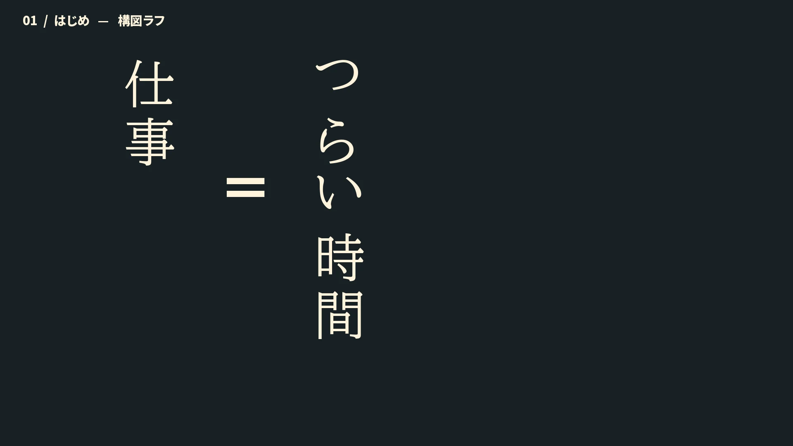

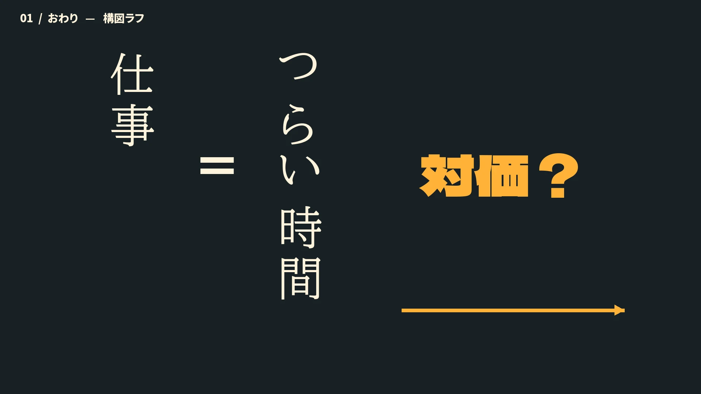
仕事＝つらい時間の対価？
仕事は、つらい時間と引き換えにお金をもらうもの。昔の私も、そう思っていました。
縦組みの列を画面の上下から重くかみ合わせ、読む間も列全体を逆方向にずらす。文字の形は変形させない。最後に下からアンバーの面が大きくせり上がる。
明朝・太字・色面。
低い打音で重さを出し、「昔の私も」の直後に面を開く。
根拠と表現上の留保
原稿冒頭＋今回の本人説明。「日本人は昔から全員そう考える」という歴史・国民性の断定にはしない。
楽しく働いて、お金をもらう。
0:07–0:16 / 約9秒

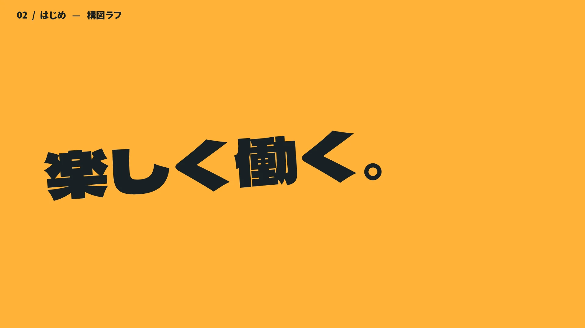

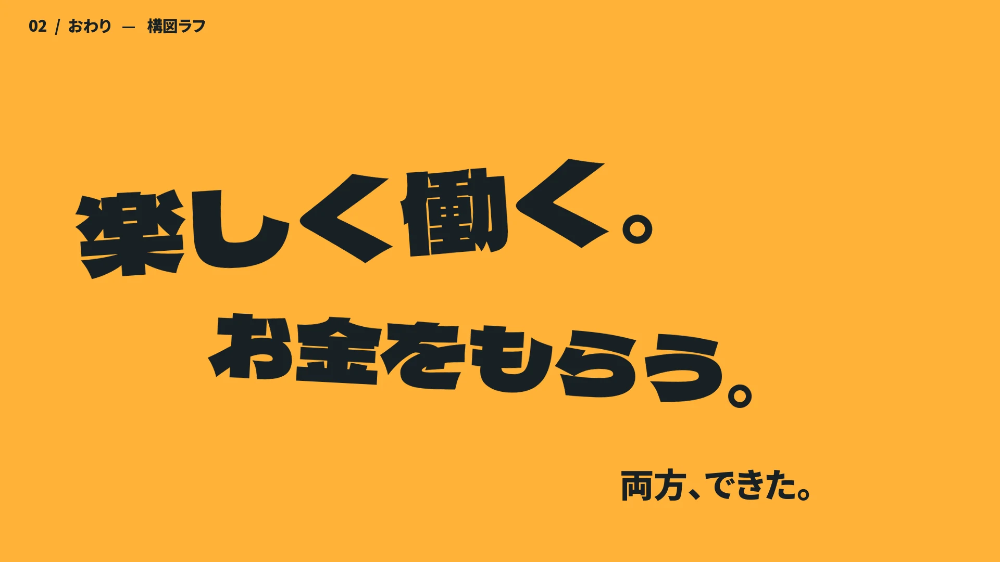
楽しく働く。
お金をもらう。
両方、できた。
でも、楽しく働いて、お金をもらう。そんな働き方は、実際にあります。私は、それを経験してきました。
巨大な一行が手前へ寄り、別方向から入る二行目と組み上がる。行ごとの大きさを変えながら、組み上がったブロックごと斜めに横断する。出現後も画面を運び、過去の場面へ引き渡す。
Dela Gothic One・色面。
ここでベースとドラムが開く。「両方」は画の要約として置く。
根拠と表現上の留保
今回の本人説明＋原稿の体験談。収入額・成功確率・誰でもできるという保証は追加しない。
成果は出た。でも苦しかった。
0:16–0:26 / 約10秒

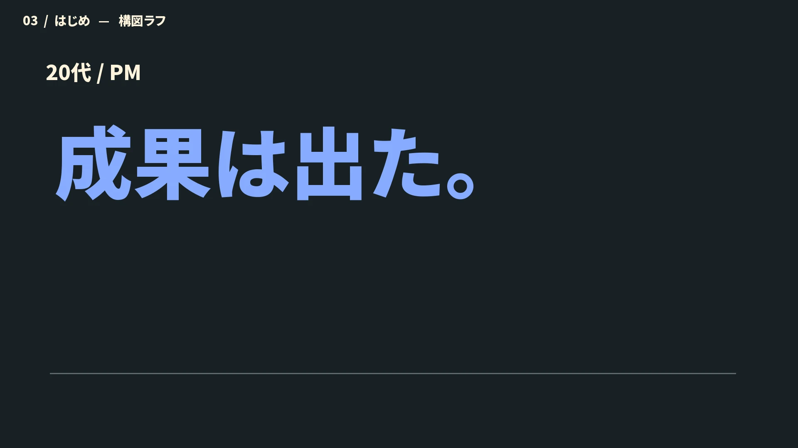

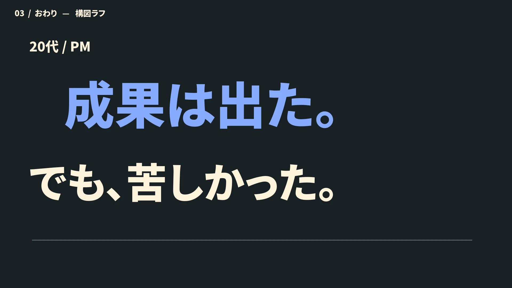
成果は出た。
でも、苦しかった。
20代はプロジェクトマネージャー。責任もやりがいもあり、成果も出た。でも、正直、苦しさが勝っていました。
大きさの異なる活字を二段で逆向きに走らせる。「成果」の行を奥へ送り、「苦しかった」の行を前へ出す。棒グラフの高さで気分を数量化せず、文字の前後関係で内面と評価の違いを見せる。
太字・小さな時点表示。
拍は保ったまま音色を絞る。暗い回想を長く引っ張らない。
根拠と表現上の留保
金融業界の節。仕事自体の責任・やりがいを声で残し、PMという職業全体を否定しない。
休日は、夢中だった。
0:26–0:35 / 約9秒

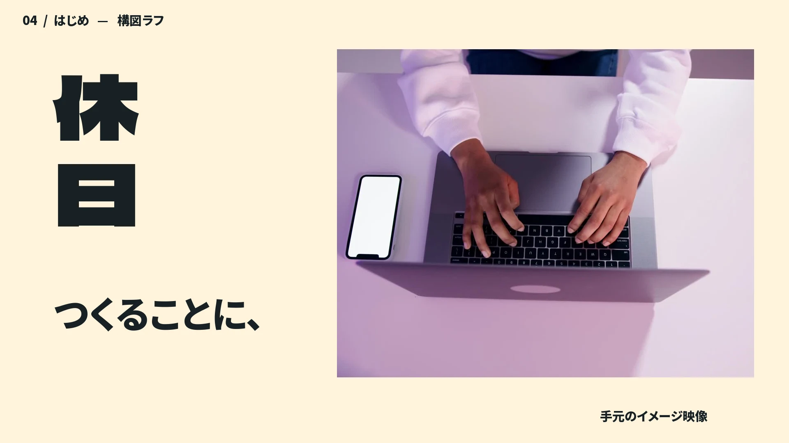

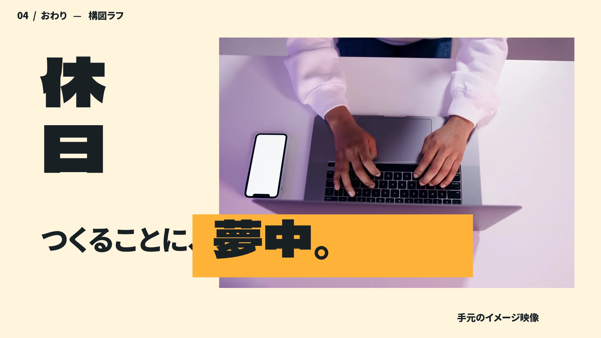
休日
つくることに、夢中。
一方、休日はハッカソンへ。新しい技術を触って、作ってみる。この時間が、たまらなく好きでした。
縦組みから横組みへの転換。動画の窓を斜めの大きな帯として広げ、文字は窓の縁をまたいで進む。動画自身は等速。末尾の窓の横移動を、次の都市写真の横移動へ合わせる。
assets/video/typing-closeup-10s.mp4 の0–6秒。手元のイメージ映像。
軽い鍵盤音と打鍵を想起させる短い音。原音は使わない。
根拠と表現上の留保
休日のハッカソンの記述。動画の人物は筆者ではなく、当時の記録映像でもない。
30歳、香港へ。
0:35–0:42 / 約7秒

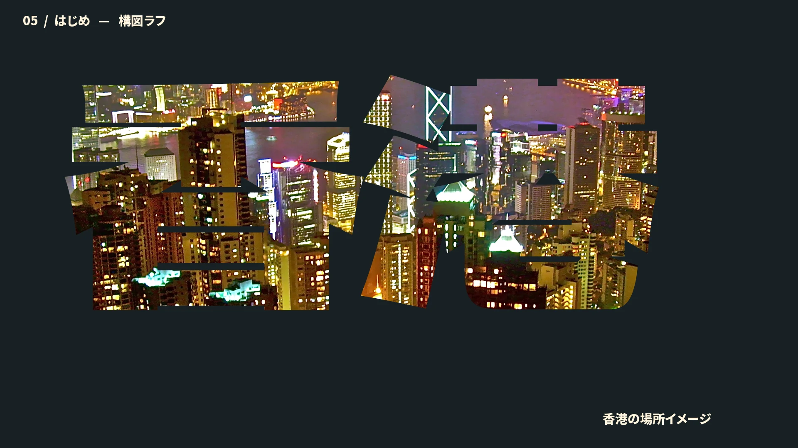

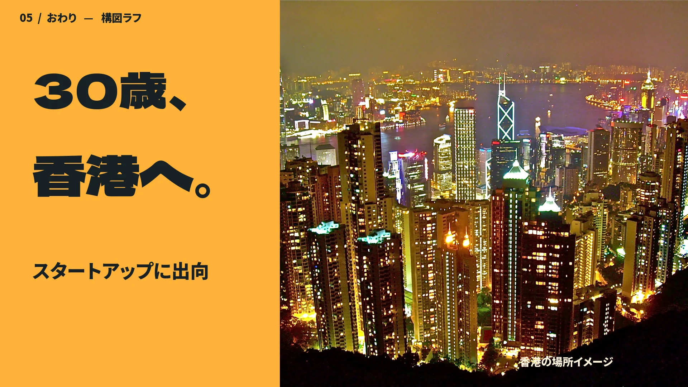
30歳、香港へ。
スタートアップに出向
30歳で、香港のスタートアップに出向。そこで、思いがけない転機が訪れます。
「香港」全体を大きく寄せ、写真を一枚の帯として展開する。写真には横のパンと寄りを掛け、文字は別の層で読み位置を守る。建物の不自然な奥行き変形は避ける。写真の色面を次の「平日」へ渡す。
assets/photo/hong-kong-skyline-2009.jpg。カット内全区間で使用。香港の場所イメージ。
短い吸い込み音から拍頭へ。旅行番組の風景鑑賞にせず、転機として使う。
根拠と表現上の留保
香港の節。「出向」を声と画面に明記。写真は2009年撮影の他者の写真で、赴任時の記録ではない。
休日の「好き」が、平日の仕事に。
0:42–0:52 / 約10秒

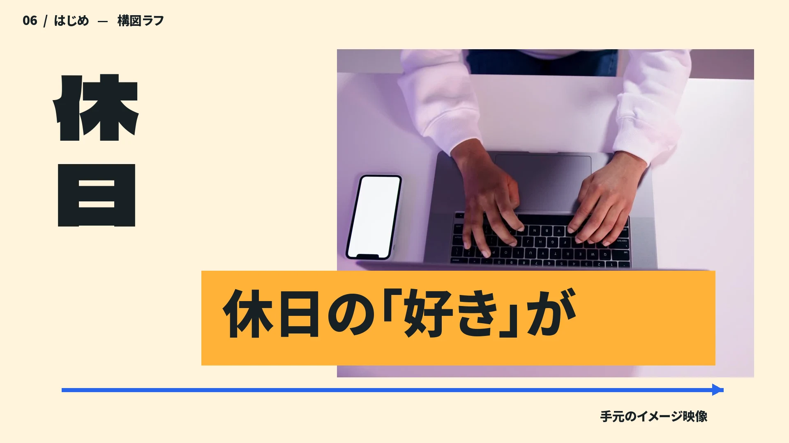

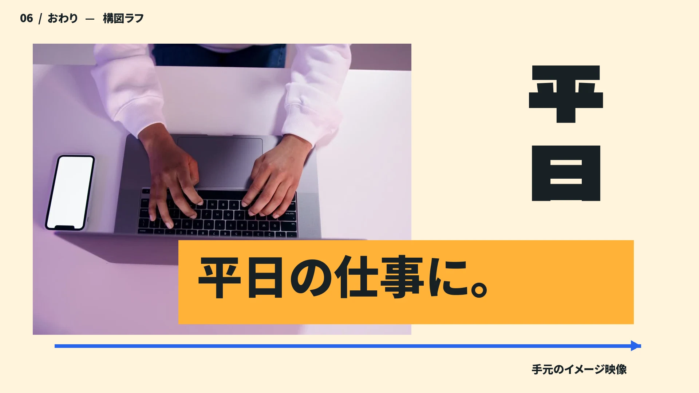
休日の「好き」が
平日の仕事に。
休日に楽しんでいた技術が、平日の仕事になったんです。好きだから試したくなる。仕事でも、夢中になれました。
同じ動作の動画を使い、時間の区分だけが変わったことを見せる。窓の移動と横断する「好き」を連動させ、見出しが縦から横へ向き直る。読み区間は動画窓と行のブロックを逆方向へ流す。
assets/video/typing-closeup-10s.mp4 の0–7秒。04との意図的な反復。
「平日の仕事」で拍と組み替えを合わせる。声のあとに動作を見る短い余白を取る。
根拠と表現上の留保
香港の節。好きが仕事になり積極的に取り組めたという本人の経験。
楽しい仕事でも、評価された。
0:52–1:03 / 約11秒

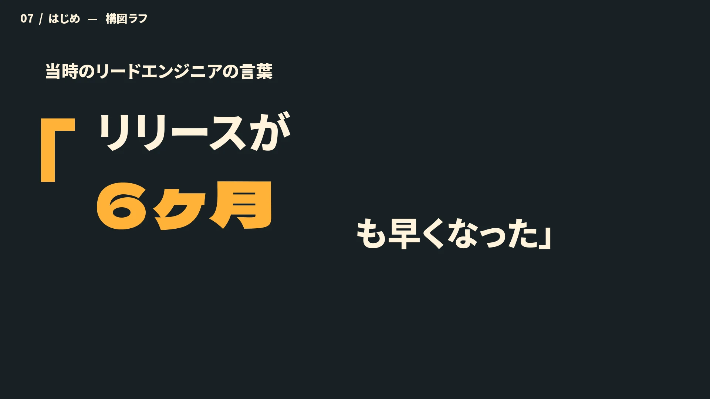

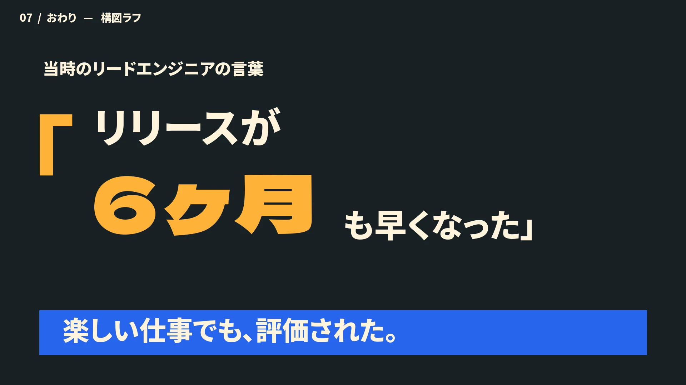
「リリースが
6ヶ月も早くなった」
楽しい仕事でも、評価された。
リードエンジニアからは、「君がジョインしてくれたおかげで、リリースが6ヶ月も早くなった」と言ってもらえました。
引用符を額縁のように大きく広げ、数字と文をサイズ違いで組む。数字だけを先走って見せず、リードエンジニアの言葉だと分かったあとに寄る。読む間は引用ブロック全体が滑り、閉じ括弧が次の開放的な面を押す。
太字・かぎ括弧・小さな「当時のリードエンジニアの言葉」。
引用は同じ語り手が自然に読む。他人の声の再現は不要。
根拠と表現上の留保
香港の節の引用。6ヶ月は発言中の値で、客観的に測定・検証した短縮実績とは言い換えない。
楽しい。しかも、仕事になる。
1:03–1:11 / 約8秒

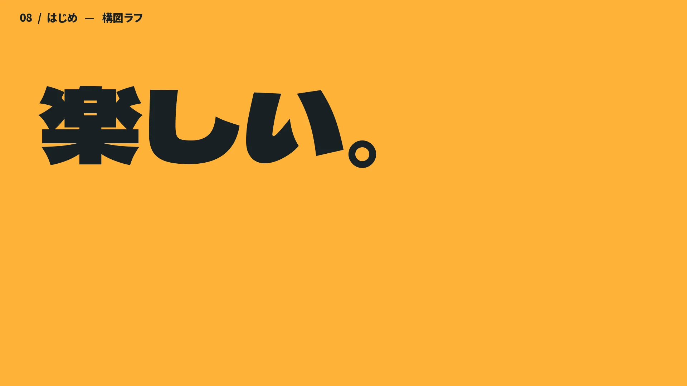

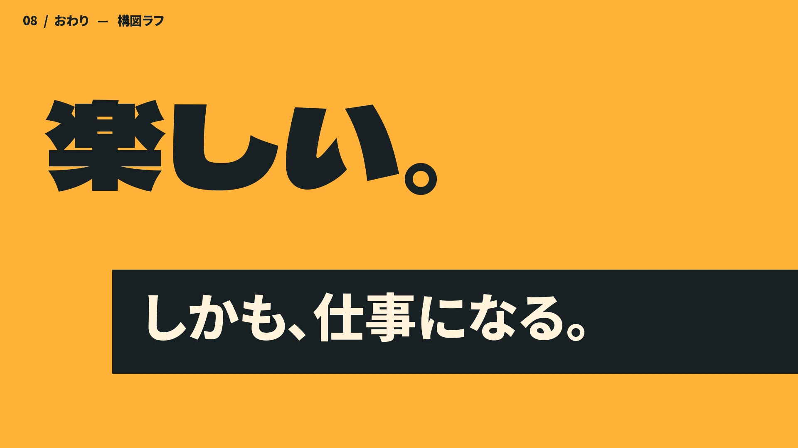
楽しい。
しかも、仕事になる。
楽しかった。しかも、仕事として評価された。辛くなければ仕事じゃない、と考える必要はなかったんです。
02を響かせつつ、今回は文字の帯を奥から手前へ通す。小さな文字を大量に散らさず、二つの強い行で画面全体を組み替える。面の反転と斜めの押し出しを次の帰国へつなぐ。
太字・色面。
ここは肯定の小さな頂点。音楽のフレーズも一段開く。
根拠と表現上の留保
原稿の「楽しい仕事でも高く評価された」＋今回の本人説明。
楽しめる仕事を、自分で選び直す。
1:11–1:24 / 約13秒

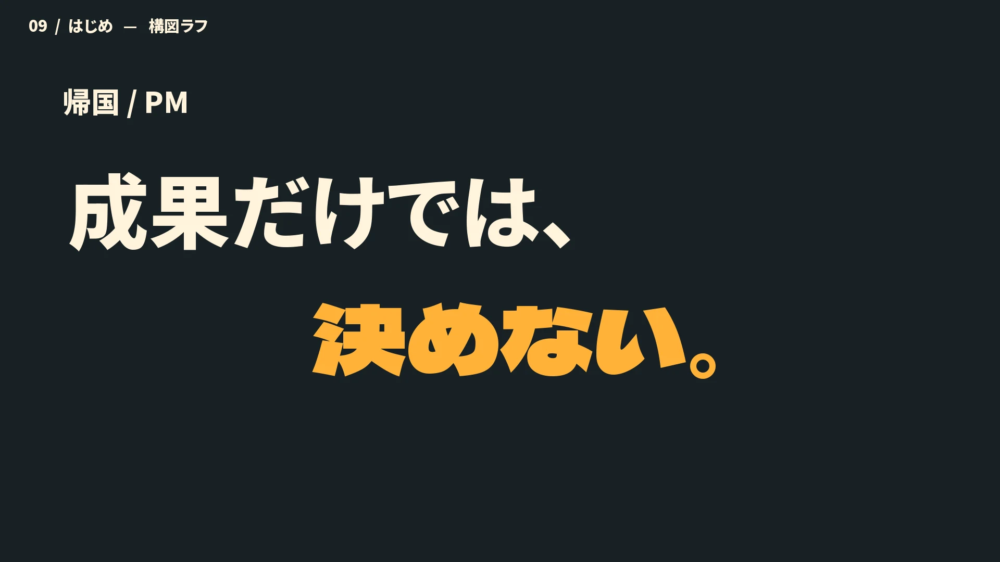

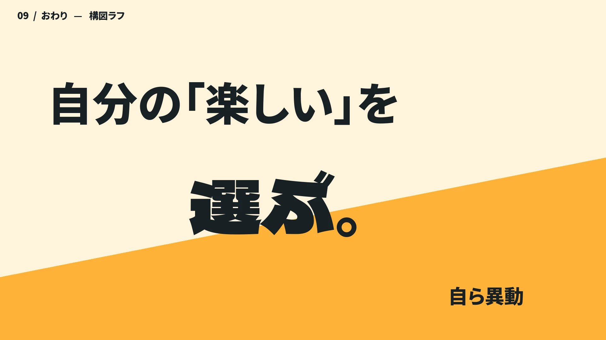
成果だけでは、決めない。
自分の「楽しい」を選ぶ。
帰国してPMに戻ると、成果は出ても、やっぱり面白くない。だから、自分から異動を希望しました。楽しめる仕事を、自分で選び直したんです。
前半は二段の文字を斜めに押し込み、後半で「楽しい」を含む行全体が横の広い面へ抜ける。同じ窮屈さを長く反復せず、本人の選択へ運動の向きを変える。
明朝と太字・小さな「自ら異動」。
前半は低域を絞り、異動を語るところでリズムを戻す。
根拠と表現上の留保
帰国の節。天職の基準は筆者個人のもの。全員へ退職を促す話にはしない。
「好き」は、広がっていく。
1:24–1:35 / 約11秒

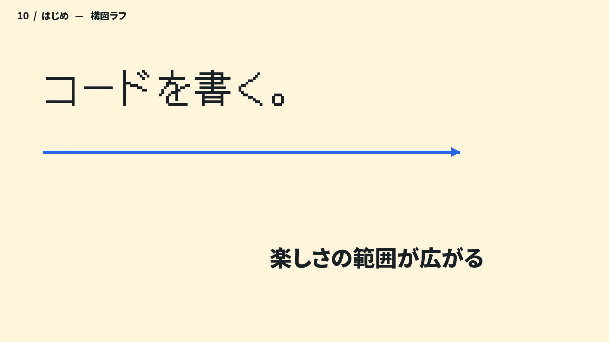

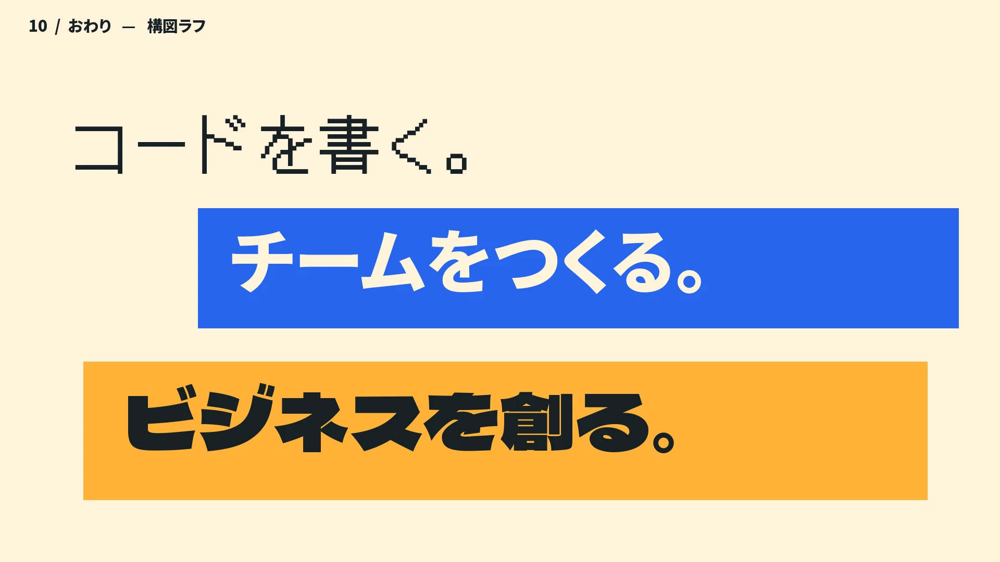
コードを書く。
チームをつくる。
ビジネスを創る。
やがて楽しさは、コードを書くことから、チームやビジネスを創ることへ。好きなことの中身も、経験とともに広がっていきました。
コードの行が複数の面を生むように横へ展開する。面の層は大きく回り込み、文字は正面で組み直す。コードを砕いたり捨てたりせず、楽しさの範囲が広がることを見せる。
DotGothic16・太字・三つの色面。
パーカッションを足し、広がりを作る。過去の肩書や人数を列挙しない。
根拠と表現上の留保
新規プロダクト、CTOの節。コード嫌いになったのではなく、楽しさの中心が移った。
つくり方も、変わる。
1:35–1:43 / 約8秒

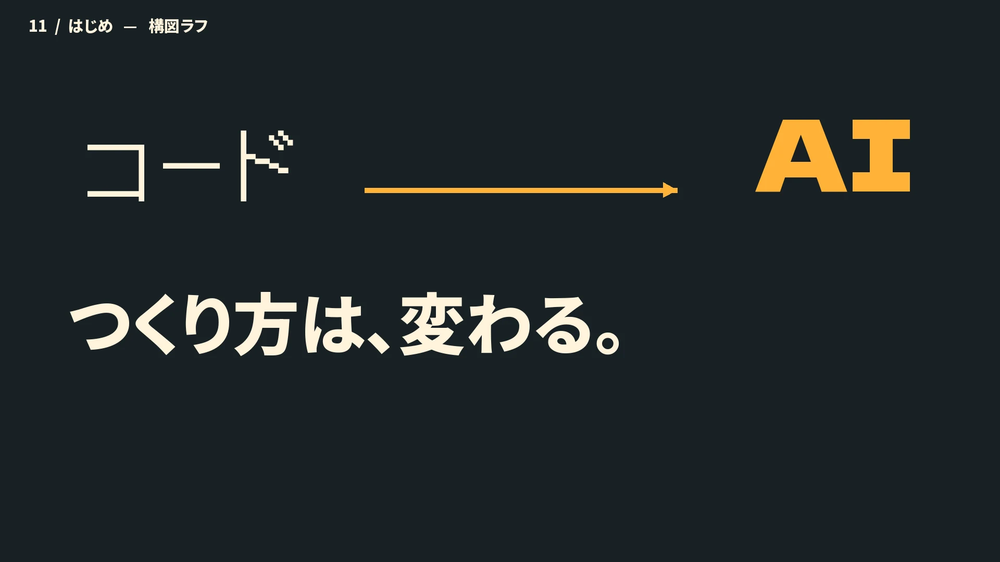

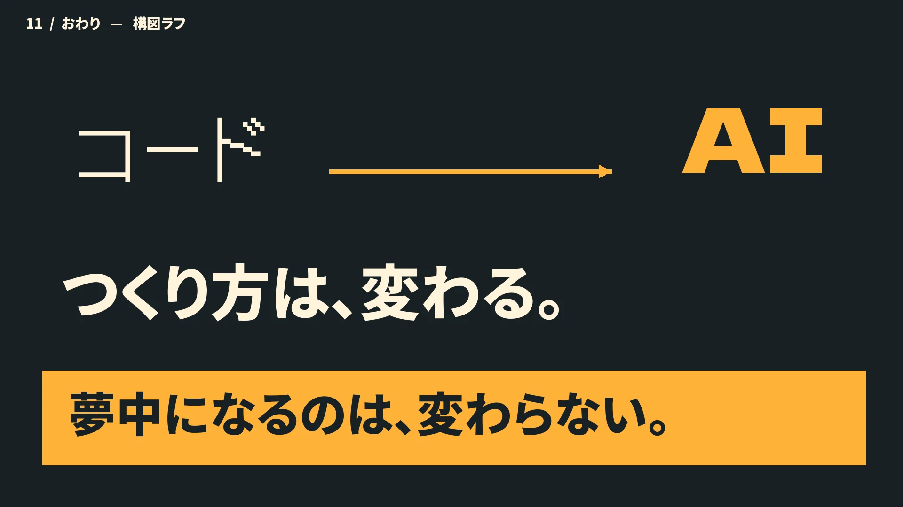
つくり方は、変わる。
夢中になるのは、変わらない。
AIにコードを任せる開発にも、夢中になりました。作り方が変わっても、楽しんで価値を生むことは変わりません。
コードの行をAIの面へ送り、前景の大きな一行が画面を斜めに横断する。コードの雨・ノイズで埋めず、文字の質感とサイズの対比を使う。
ドット書体・太字・AIの面。
硬質な短い音から、次の循環の拍へ連続させる。
根拠と表現上の留保
AI時代のCTOの節（2025年の記事時点の経験）。90%の目標や現在の達成率は表示しない。
楽しいから、もっと考える。
1:43–1:53 / 約10秒

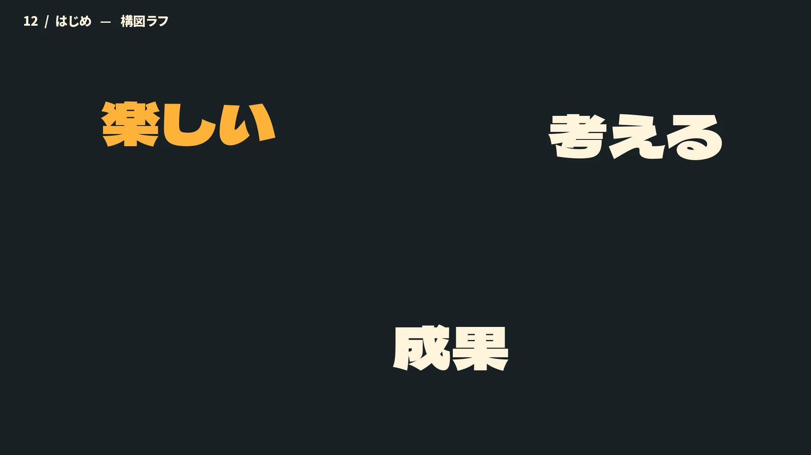

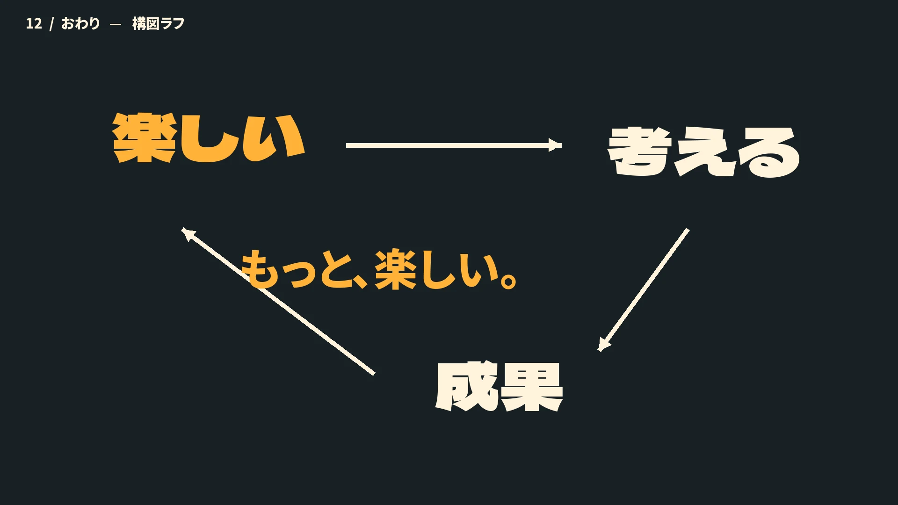
楽しい → 考える → 成果
もっと、楽しい。
楽しいから、つい考える。それが成果につながって、もっと楽しくなる。私は、この循環を実感しています。
背景の面は回り込み、前景の三語は読みやすい向きを保って位置を受け渡す。線の描画と大きな寄りで循環を一周見せ、最後の「楽しい」から次の文を引き出す。永久に回る小さな説明図にはしない。
三つの語・矢印・回転する下層の面。three.js推奨。
一語ずつ拍に同期。声の「実感しています」で本人の経験だと着地する。
根拠と表現上の留保
原稿の循環の段落。必ず成果が出るという因果法則にしない。休まず働く推奨でもない。
大変なことも、ある。
1:53–2:03 / 約10秒

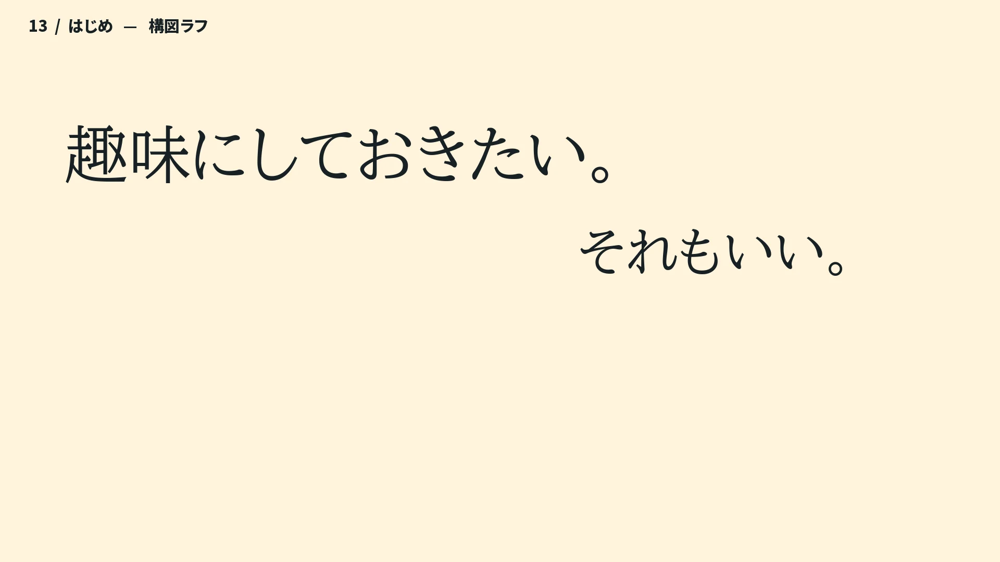

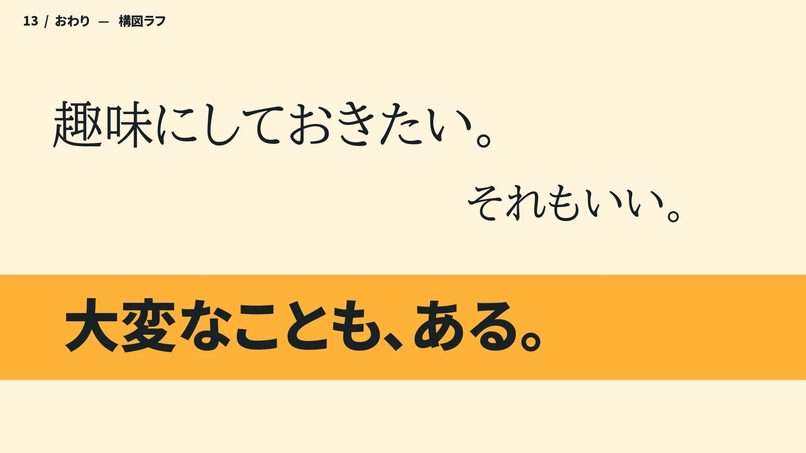
趣味にしておきたい。それもいい。
大変なことも、ある。
好きなことは趣味にしておきたい。それも一つの価値観です。仕事ですから、大変なこともあります。
文ごとに一つの行として横から通し、広い余白を含む面全体が移動する。打ち消し線や小さすぎる注釈にせず、一度読める主文として扱う。次の肯定へ向け、最後は面の幅を大きく変える。
明朝・太字・紙色の面。
ドラムは残し上物を減らす。説教調・反論調にせず、自然な一呼吸。
根拠と表現上の留保
おわりに。二つの留保を声でも画でも残す。
好きなことを仕事にするって、めっちゃいい。
2:03–2:13 / 約10秒

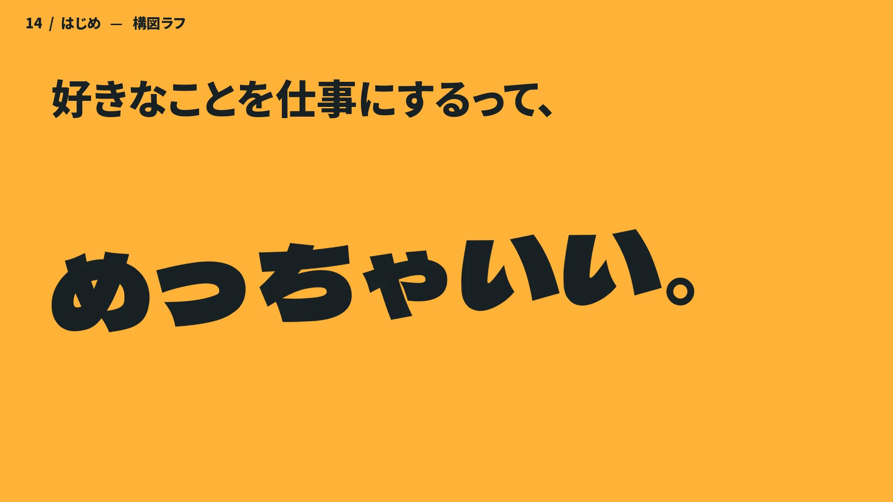

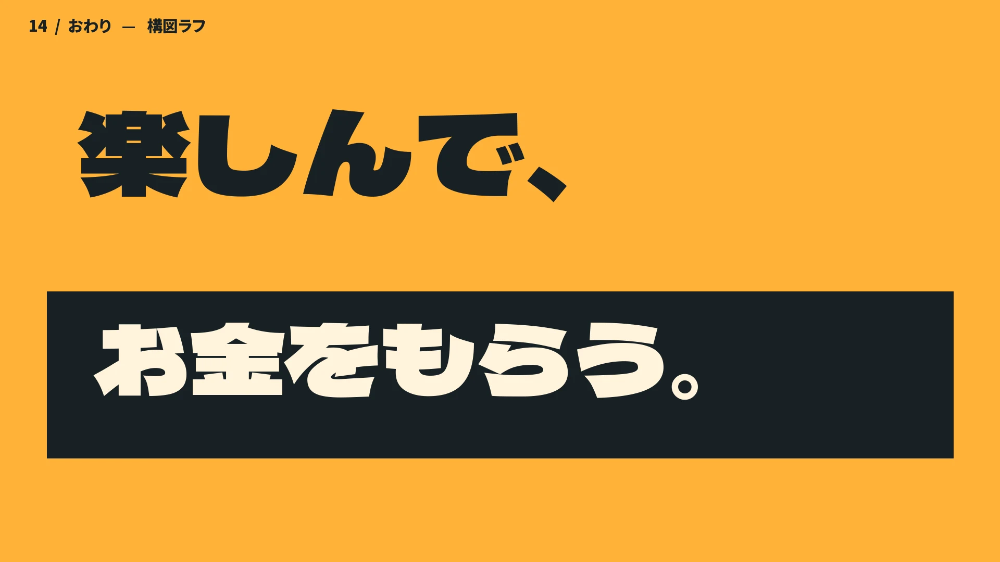
好きなことを仕事にするって、
めっちゃいい。
楽しんで、お金をもらう。
それでも、私は伝えたい。好きなことを仕事にするって、めっちゃいい。楽しんで、お金をもらう働き方は、あるんです。
大きな語の寄り・行ごとの逆方向の移動・斜めの組み替えを重ねて最大の見せ場にする。主文の字形と読む時間を守り、最終文の読了後に色面を大きく滑らせてロゴへつなぐ。
Dela Gothic One・Noto Sans JP・アンバーと紙色の面。
音楽の最も開けたフレーズ。「あるんです」を言い終えてからロゴへ。
根拠と表現上の留保
今回の本人説明＋記事の結論。問いかけで肯定を薄めず、本人の実感として言い切る。
エンドロゴ
2:13–2:18.5 / 約5.5秒

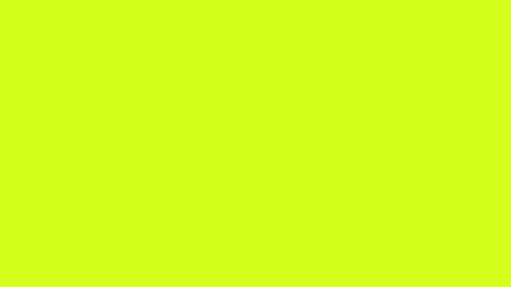

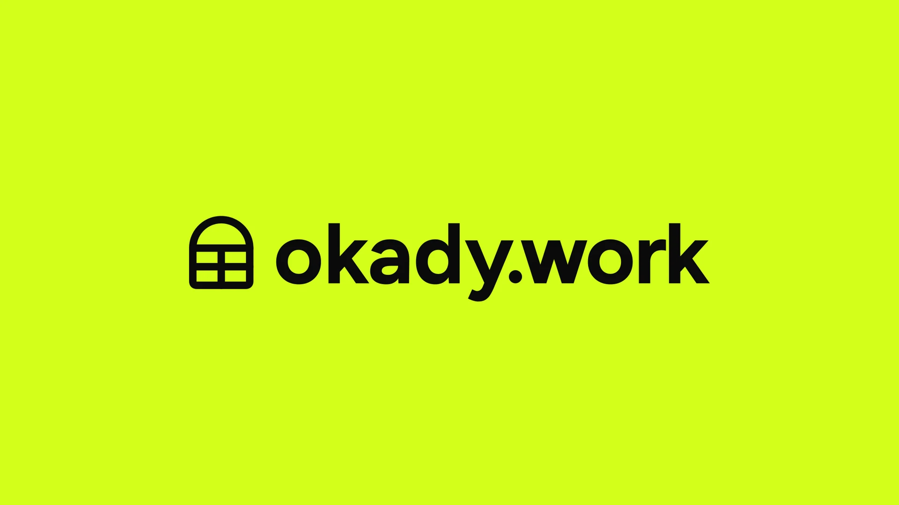
ロゴのみ
なし。ロゴのみ。
0–2.6秒：oの落下・バウンド。2.6–3.2秒：全体が左へ。3.0–4.0秒：.workが順に現れる。以降1.5秒保持。形・書体・色・比率を変えず、フレーム時刻から再現する。
assets/logo/okady-work-logo.svg。
ナレーションなし。BGMはこのカットの終端まで覆い、最後の保持の中で自然に収める。
根拠と表現上の留保
リポジトリ共通ロゴ仕様。
仕上げで確認すること
企画書と採用する写真・動画素材は、引き継ぎ可能です。以下は引き継ぎ先の制作者が行う仕上げと確認です。音声ファイルの用意、本編の制作、実映像と音楽を合わせた確認を担当し、声の最終選定と実測尺を決めます。
- まず05→06の連続区間を、実際の写真・動画・仮ナレーションで短く試作。文字抜き、窓の移動、手元と主文の視認性を等速で確認する。
- 有効な設定を全編へ展開。02の冒頭の肯定、05–08の転機、12–14の後半を動画で確認し、同じ出入りの連続や長い静止へ戻っていないかを見る。
- 声で経緯、文字で要点が理解できるかを確認。引用の帰属、「趣味にしておきたい」「大変なこともある」を読み取れる時間を確保する。
- 15は実再生し、ロゴの4秒の動き、1.5秒の保持、音楽の終わり方を確認。書き出し成功と演出・試聴の合格は分けて記録する。
原稿との対応：references.md。現時点の確認範囲は原稿、静止画の構図、素材の仕様と来歴。最終映像の連続再生・ナレーション試聴は未実施。